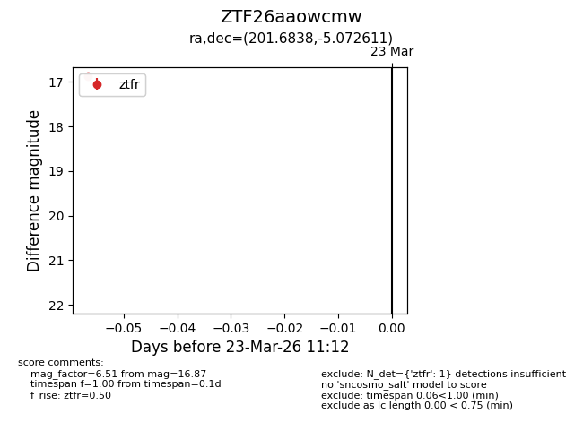
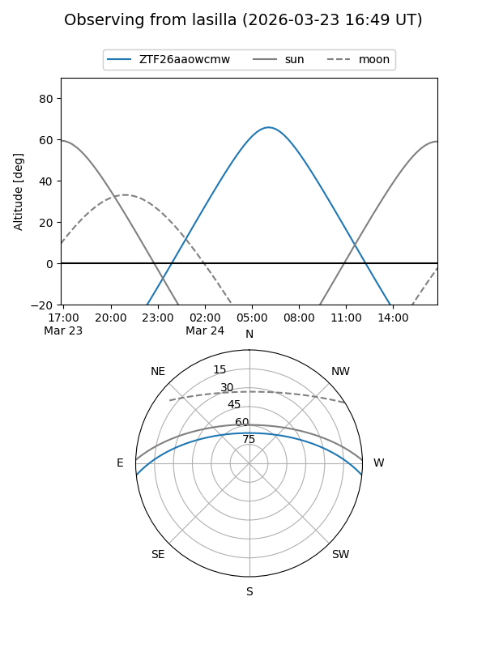
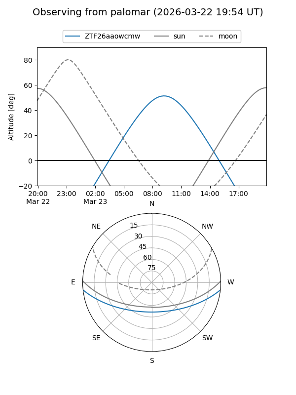

ZTF26aaowcmw
Target ZTF26aaowcmw at 2026-03-23 11:14
Aliases and brokers:
FINK: link
Lasair: link
ALeRCE: link
alt names
ZTF26aaowcmw (ztf,fink_ztf)
Coordinates:
equatorial (ra, dec) = 201.6838,-5.07261
equatorial (HMS+DMS) = 13:26:44.12,-05:04:21.40
galactic (l, b) = (319.0867,+56.68795)
Flags:
Photometry:
last ztfr=16.87
1 ztfr detections
Lightcurve

Visibility


Additional plots